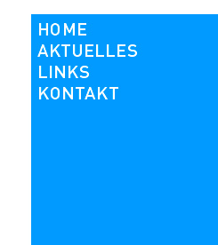

"Das Tollense-Tal ist überall"

Unsere Bürgerinitiative hat es geschafft, die geplante Ferkelfabrik am Tollensetal zu einem überregionalen Thema zu machen.
Der Widerstand hat Schule gemacht. Junge Menschen aus dem gesamten Bundesgebiet beteiligten sich an einem Aktionswochenende vom 8. bis 11. August in der Nähe des Baugeländes. Ihre Arbeit erhebt den Anspruch, unabhängig von sämtlichen Organisationen, Stiftungen, Gruppierungen oder Parteien zu sein.
Das Neue Deutschland berichtete am 11.8.2009:"...Die jungen Leute am Widerstandshaus haben keine Promis hinter sich."
Ihr erklärtes Ziel ist es, auf die Folgen der industriellen Massentierhaltung aufmerksam zu machen. Ihre Methode, die persönliche Verantwortung der Verantwortlichen zu demonstrieren, führte zu einer Eskalation der friedlich begonnenen Proteste. Das erzeugte zum Einen überregionale Wahrnehmung in der Presse, verschreckt aber auch Gegner der Ferkelfabrik im regionalen Umfeld.
Nähere Informationen: http://schweinerei.blogsport.de/2009/08/11/aktionstage-gegen-europas-groesste-geplante-ferkelzuchtanlage/
"Leben am Tollensetal- mit Grundeinkommen" statt Verwurstung des ganzen Landes
Ein Goldenes Kalb hängt am Tropf der Politiker. Der Mythos Arbeitsplatz darf entgegen besserem Wissen nicht sterben.
Renate Holznagel,dDie gelernte Rinderzüchterin aus dem Wahlkreis DM,
die agrarpolitische Sprecherin der CDU-Landtagsfraktion und
Vizelandtagspräsidentin will um jeden Arbeitsplatz, um jeden Investor
und um jede Ansiedlung im Landkreis Demmin kämpfen.
Ihr Landkreis wird am 10.07.2009 präsentiert zur Bundesrabattenschau auf der Bühne am Marstall in Schwerin.
Eine gegenläufige Entwicklung in diesem Notstandsgebiet, im armen Land MV zeigt der Initiativkreis für ein „Leben am Tollensetal- mit Grundeinkommen“.
Dort könnte sich eine “Regionalagentur für Grundeinkommen” entwickeln.
Die Einführung eines Bedingungslosen Grundeinkommens BGE kann zwei große Ideen vereinen, die sich bisher blockieren: Solidarität und persönliche Freiheit.
Die Abstimmung eines Ideenwettbewerbs zur Woche des Grundeinkommens ist abgeschlossen:
Bei 79 beteiligten Projekten erreichte „Leben am Tollensetal- mit Grundeinkommen“ einen beachtlichen Platz 8 (die 6 ersten bekamen eine Anschubfinanzierung).
Jede Stimme für die Regionalagentur war auch eine Stimme gegen die übliche Verwurstungspolitik des ganzen Landes.
Hier kann das Projekt in Augenschein genommen werden:
http://www.woche-des-grundeinkommens.eu/category/ideenwettbewerb/
Mit dem Preisgeld sollten in großen Zeitungen (FAZ ...) große Anzeigen geschaltet werden. Das Projekt ist nicht vom Tisch, sondern z.Z. in der Warteschleife. Das goldenen Kalb hat seinen Platz noch nicht verlassen.
Mexico-Grippe in MV auf dem Vormarsch
Die in Mexico ausgebrochene Schweinegrippe wird in bewährter ausländerfeindlicher Umschreibung als Mexico-Grippe vom Landwirtschaftsministerium als für Schweine ungefährlich heruntergespielt.
Die massive Vergasung unschuldiger und gesunder Vögel bei Ausbruch der Vogelgrippe wird verdrängt. Die Angst vor dem Zusammenbruch des Schweinefleischmarktes dirigiert die Entscheidungen.
Jetzt wäre ein Umdenken in der im Koolitionsvertrag festgesetzten Massenveredlungsplanung der Königsweg, um der weiteren Entwicklung eines Urlaubs- u. Gesundheitslandes nicht noch mehr entgegenzuwirken.
Jetzt müssen Kappungsgrenzen für bodenungebundene Massentierhaltungsanlagen festgesetzt werden. Die für das BImSch-Verfahren relevante Größe von z.B. 1.500 Schweinen könnte ein machbarer Anfang sein, für eine Entwicklung, die der industriellen Tierproduktion den Rücken kehrt.
Das Wohl von Mensch und Tier steht auf dem Spiel.
2.Sternmarsch "Rettet das Landleben"in neuer Qualität
Der
am 18.4.2009 durchgeführte Sternmarsch nach Alt Tellin wurde
unterstützt durch das Aktionsnetzwerk Globale Landwirtschaft. Am Vortag
fand unter dem Motto "Hier Gülle - dort Hunger" eine symbolische Besetzung der Altanlage durch das Aktionsnetzwerk statt. An der
symbolischen Besetzung des geplanten Baugeländes von Europas größter
Ferkelfabrik beteiligten sich 100 AktivistInnen am internationalen
Aktionstag von "La Via Campesina
<http://www.viacampesina.org>". Weltweit gab es am 17. April etwa
genauso viel Aktionen gegen industrielle Produktion und für den Erhalt
kleinbäuerlicher Landwirtschaft. Hierzulande richteten sich die Proteste
vor allem gegen Massentierhaltung und Gentechnik
Fotogalerie Alt-Tellin unter:
http://www.umbruch-bildarchiv.de/bildarchiv/ereignis/170409alt_tellin.html
Bei Erichem in der holländischen Provinz Gelderland legten 40
AktivistInnen einen Gemüsegarten auf dem Stück Land an, auf dem
Straathof seine bereits bestehende Schweinemastanlage erweitern will.
Fotogalerie Erichem unter.
http://www.umbruch-bildarchiv.de/bildarchiv/ereignis/170409aktion_gegen_Tierfabrik.html
<http://www.umbruch-bildarchiv.de/bildarchiv/ereignis/170409aktion_gegen_Tierfabrik.html>
Die mediale Aufmerksamkeit war groß. Neben der offiziellen Presse entstanden eigene Filmbeiträge, die im Netz abrufbar sind:
http://www.youtube.com/watch?v=W44VcjuAEaA&feature=channel
http://www.youtube.com/watch?v=hkgtRlQk0DQ
http://www.youtube.com/watch?v=QGPZBK1os5g
http://www.youtube.com/watch?v=meqEephPktA
Die Erörterung der ca. 700 Einwendungen ist abgeschlossen
Der Anhörungstermin am 6.4.2009 begann unter Anwesenheit des Antragstellers Herrn Straathof.
Er überließ an den darauffolgenden Tagen seinem Auftragnehmer, der
Landwirtschaftsberatung Mecklenburg- Vorpommerns (LMS) das Feld.
Die LMS ist mehrheitlich eine Landeseinrichtung. Sie hat den Standort
für die Ferkelfabrik am Tollensetal gefunden, als den besten Standort
im ganzen Land MV. Sie hat auch den „Investor Straathof“ erfolgreich
umworben und bereitet ihm jetzt den Weg im Genehmigungsverfahren.
Es ist das Ergebnis einer politischen Entscheidung in den Niederlanden,
dass die Mega-Schweinefabrikanten ihr verseuchtes Heimatland verlassen
und es ist auch eine politische Entscheidung im sogenannten
Gesundheits- u. Tourismusland Nr.1, dass diese Agroindustriellen mit
ihrer „Bodenungebundenen Tierhaltung“ hier willkommen sind.
Der SPD-CDU Koalitionsvertrag in MV will die Veredlung des Landes MV fördern. Dazu fand in Güstrow der Schweinetag 2006 statt.
Die zuständigen ehemaligen Ministerpräsidentanwärter Backhaus (SPD) und
Seidel (CDU) verstecken sich hinter ihrer Machtlosigkeit.
Seidel als Vorsitzender des Landestourismusverbandes MV a.D. hat die
Oberaufsicht im BImSch -Verfahren zur Ferkelfabrik. Bei dieser
Investition in ein Gülleland MV wurde das dafür geschaffene
Beschleunigungsgesetz angewandt.
Die Tagesordnung wurde nach 3 Tagen abgeschlossen mit dem Punkt 13.6 Profitgier, Bereicherung.
Der Nordkurier berichtete in seiner Demminer Ausgabe(DZ): "Protest
begleitet Start der Anhörung" (DZ 7. 4. 2009) und "Anhörung als fair
und sachlich empfunden".
Ein Leserbrief vom 15.4. in der DZ zeigt das ganze Dilemma:
Am Ende spielt es keine Rolle, ob Tatsachen "diktatorisch" oder "demokratisch" aufgezwungen werden.
Der Widerstand
Die Widerstandsbewegungen im Dritten Reich und in anderen Diktaturen
schaffte die Grundlage für das Widerstandsrecht in Deutschland als
positives Verfassungsrecht zum Schutz der Verfassung gegen
verfassungswidrige Ausübung der Staatsgewalt.
In das Grundgesetz der Bundesrepublik Deutschland wurde im Rahmen der
Notstandsgesetzgebung (24. 6. 1968) das Widerstandsrecht ausdrücklich
in Art. 20 Abs. 4 aufgenommen, um die bei Gefahr einer tief greifenden
Störung der grundgesetzlichen Ordnung notwendige Durchbrechung der
normalen Legalität um der Legitimität willen im GG zu fixieren.
So entsteht jetzt ein Widerstandshaus mit Infobüro neben der zukünftigen Anlage der Ferkelfabrik.
ARCHIV (Textbausteine der 1. Seite)
(Spalte Mitte oben)
Eroberung dünnbesiedelten Raumes durch die Agrarindustrie
Durch Investitionen in die Agrarindustrie sind im Landkreis Demmin ca.
90% der Arbeitsplätze in der Landwirtschaft weggebrochen. In der Folge
mussten viele Menschen die Region verlassen.
Für den entstandenen Freiraum ist seit Jahren eine gewaltige Tierfabrik
ge-plant, ebenso auch in anderen Gemeinden Ostdeutschlands. Die
Referentin für Tierproduktion des Landesbauernverbandes ist in der
Gemeinde Alt Tellin am Tollensetal Vizebürgermeisterin; durch ihre
Initiative soll am Tollensetal ein holländischer Schweineproduzent
Europas größte Ferkelfabrik errichten dürfen.
Die drohende Anlage
Zwischen Neu Plötz, Siedenbüssow und Daberkow ist eine riesige
Sauenzuchtanlage geplant. Landtags-Politiker von CDU und SPD freuen
sich auf 40 angebliche Arbeitplätze für die Region, die Wirklichkeit
sieht aber anders aus: der überdimensionale Saustall vernichtet im
Gegenzug Jobs im Tourismus und ruiniert kleine Schweineställe der
Umgegend - ein Arbeitsplätzeverlust, der nicht gegengerechnet wird. Die
Lebensqualität in der Region geht verloren, Wohnungen und Häuser
verlieren an Wert, Investitionen im Tourismus und im regionalen Gewerbe
werden in Frage gestellt.
Ihre Begleiterscheinungen
- Tiertransporte, Futtertransporte und Gülletransporte rund um die Uhr
- Gülle auf den Feldern in der gesamten Region, ganzjährig!
- hohe Ammoniakbelastungen der Luft mit gesundheitlichen Folgen
besonders für Kinder und ältere Menschen, wie Asthma und Allergien -
die deutsche Ärzteschaft warnt seit Jahren vor der Massentierproduktion
- Hohe Seuchengefahr und damit Einschränkungen für private Tierhalter
- Die 10.000 Sauen werden in engen Verschlägen als Gebärmaschinen
missbraucht, die Ferkel in Dunkelhaft bei 50Lux gehalten - das ist
brutale Tierquälerei direkt vor unserer Haustür
(Spalte Mitte unten)
Gegenläufige Entwicklung zur Landflucht
Das untere Tollensetal hat sich seit der Wende und besonders in den
letzten Jahren auch zu einem Wohnstandort für Menschen entwickelt, die
auf der Suche nach Ruhe und Natur hier einen Neubeginn wagten. Durch
den Zuzug dieser oft kulturell interessierten und sozial orientierten
Menschen konnten zum Einen die Bevölkerungszahlen einiger Dörfer bis in
die heutige Zeit noch stabil gehalten werden, zum Anderen entwickelte
sich dadurch auch ein breites Spektrum wirtschaftlicher Aktivitäten,
u.a. auch im Fremdenverkehr (Cafe, Kanustation, Reiterhof, Bikerhotel,
Ferienwohnungen usw.)
Leitprojekt „Leben am Tollensetal“
Das Projekt der Lokalen Aktionsgruppe „Demminer Land“ soll die
Lebensqualität der Bevölkerung steigern. Erweiterte Angebote für einen
zahlenmäßig überschaubaren Fremdenverkehr (z.B. geführte Touren in den
Bereichen Wandern, Kanu und Rad, Park und Denkmal) sollen zusätzliche
Verdienstmöglichkeiten schaffen. Bildung in Bezug auf das kulturelle
und natürliche Erbe sowie Förderung von Kunst und Kultur schaffen dafür
die Voraussetzungen und gleichzeitig auch ein attraktives Angebot für
die Besucher der Region.
Hier liegt offensichtlich ein Entwicklungspotenzial dieser ländlichen
Räume, das zu fördern ist, da es nachweisbar positive Effekte hat.
Gerade die Sicherung und Schaffung von Arbeitsplätzen durch Nutzung der
endogenen Potenziale des Raums ist hier als besonderer Aspekt
hervorzuheben. Mit den geplanten Aktivitäten werden diese
Lebensentwürfe unterstützt. Damit wird die Lebensqualität verbessert
und der allgemeinen Landflucht begegnet, indem Anreiz für weiteren
Zuzug entsteht (gefördert durch das Entwicklungsprogramm für den
Ländlichen Raum EPLR).
Unter dem Motto „Rettet das Landleben“ fand am 20.9.2008 ein Sternmarsch nach Alt Tellin statt.
Ignoranz durch die Landespolitik
Dieser Hoffnung für eine Perspektive in Nordostdeutschland steht die
geplante Errichtung der Ferkelfabrik konträr gegenüber. Darum hat sich
die BI „Leben am Tollensetal“ gegründet, um die katastrophalen Folgen
dieses Plans zu zeigen.
Durch die BI initiert hat sich die Mehrheit der wahlberechtigten Bürger
der zuständigen Gemeinde Alt Tellin gegen die Anlage ausgesprochen.Nach
der Übergabe der Unterschriften der Einwohner hatten der Bürgermeister
und seine Stellvertreterin versprochen, alles zu tun, damit die Anlage
nicht kommt.
Der Investor wurde unterrichtet, dass mit ihm keine Zusammenarbeit mehr
erwünscht sei. Diese Aufgabe hatte die Referentin für Tierproduktion in
ihrer Funktion als Vizebürgermeisterin übernommen, dennoch ist der
beantragten Baugenehmigung mit 5:4 Stimmen das gemeindliche
Einvernehmen erteilt worden - nur möglich, weil ein als befangen
angesehener Gemeindevertreter mit abgestimmt hat, dessen Frau dem
Investor das Baugrundstück verkaufte. Seit dem ist der
Korruptionsverdacht in der Bevölkerung nicht mehr auszuräumen.
Der soziale Frieden als Grundlage jedes Gemeinwesens ist in Gefahr.
Fremden-feindlichkeit gegen Zugezogene wird geschürt.
Im „Gesundheits- und Tourismusland Nr.1“ wird das Problem in seiner
ganzen Tragweite verdrängt! Denn die Koalitionspartner in der
Landesregierung MVs wollen die Enwicklung der Tierbestände im
Land vorantreiben. Dazu werden Genehmigungsverfahren im Bereich der
Errichtung von Tierhaltungsanlagen gestrafft und durch eine offensivere
Öffentlichkeitsarbeit begleitet. Mit Bürgerinitiativen soll im
Interesse der Investoren kurzer Prozess gemacht werden.
Staatliches Amt für Umwelt und Natur übersah fehlerhafte Umweltverträglichkeitsuntersuchung
Ob aber die Investition in eine 10.000 Sauen-Anlage völlig ohne Schaden
für die Region und den Tourismus sein wird, so wie es der zuständige
CDU-Bürger-meister der Nachbargemeinde sieht, das steht derzeit noch in
den Sternen. Fest aber steht, dass sich der Investor schon jetzt nicht
an die Auflagen hält, die ihm erteilt worden sind.
Wie verträglich so eine Investition für die schützenswerten Güter der
Region ist, das sollte im Rahmen einer Umweltverträglichkeitsprüfung
(UVP) herausgefunden werden. Dazu muss der Investor im Umkreis von 1 km
um seine Emissionsquelle, die geplante Ferkelfabrik, eine
Umweltverträglichkeitsuntersuchung (UVU) durchführen lassen. Gemäß §4
der 9. BIMSCHV sind durch den Träger des Vorhabens dem Antrag die
Unterlagen beizufügen, die zur Prüfung der Genehmigungsvoraussetzung
erforderlich sind. Dazu gehört die UVU. Das Ziel der UVU ist es, die
Auswirkungen am Standort der Anlage auf die Umwelt präzise zu erfassen
und zu beurteilen.
Doch mit der Präzision ist es nicht weit her, denn der Antragsteller
verschob den geplanten Standort um ca. 400m in Richtung des Dorfes
Siedenbüssow, ohne eine UVU für den neuen Standort zu erstellen. Ein
kleiner naturbelassener Bach, der dort die Ortslage durchfließt, ist
somit überhaupt nicht untersucht worden. Das gilt in etwa für ein
Viertel der zu untersuchenden Fläche, das sind ca. 80 ha.
Aber der Behörde, die dem Investor die Auflage erteilt hat, dem
Staatliche Amt für Umwelt und Natur (StAUN), ist dieser Mangel leider
nicht aufgefallen.
Selbst der vom Antragsteller dafür bezahlte Kontrolleur, der die
Antragsunterlagen auf Vollständigkeit prüfte, hat hier versagt.
Dem Antragsteller, dem berüchtigten Herrn Straathof, der trotz der
Ermangelung eines Kadaverhauses mit der Produktion von toten Schweinen
an seinem anderen Standort in Medow beginnen konnte, ohne dass ihm
dabei ein StAUN Einhalt geboten hätte, dem wurde so beinahe wieder ein
reibungsloses investorenfreundlichen Genehmigungsverfahrens, wie ein
Roter Teppich ausgerollt.
Aber dieses Glück scheint sich nun doch nicht zu wiederholen.
Denn unsere Bürgerinitiative schaute gründlich in die Unterlagen und erkannte das Problem.
Darum verlangte die BI am 11.11.2008 beim zuständigen StAUN
Neubrandenburg die UVU für den geplanten Standort. Denn diese lag
definitiv nicht vor. Damit waren die Voraussetzungen für ein
ordnungsgemäßes Auslegungsverfahren und eine sinnvolle Beteiligung der
Öffentlichkeit nicht gegeben. Trotzdem wurde durch das StAUN das
Auslegungsverfahren nicht unterbrochen.
StAUN forderte fehlende Unterlagen vom Antragsteller
Doch die offensiven Bemühungen der BI hatten Erfolg. Nach einer
Intervention des Landkreises Demmin forderte inzwischen das StAUN vom
Antragsteller kartografische und verbale Ergänzungen zu den betroffenen
Kapiteln seiner Unterlagen.
Erst wenn diese neuen Erkenntnisse vorliegen, wird über den weiteren
Verfahrensablauf entschieden werden. Insbesondere wird dann auch über
das Erfordernis einer nochmaligen Beteiligung der Träger öffentlicher
Belange und über eine nochmalige Auslegung zu entscheiden sein.
Ca.700 Einwender haben Bedenken vorgebracht
Bis zum 16.12.2008 war es möglich, gegen die geplante Ferkelfabrik am
Tollensetal seine Einwände vorzutragen. Davon haben in Schriftform ca.
800 Einwender Gebrauch gemacht.
Diese Einwände mußten nicht im Detail ausformuliert und begründet
werden. Es ging darum, für den bisher geplanten Erörterungstermin am
10.März 2009 ein breites Feld von Themen zu öffnen.
Die ganze Tragweite der geplanten Ferkelfabrik für die Region hier
wurde deutlich durch die Stellungnahme der hiesigen
Vizelandtagspräsidentin Frau Holznagel. Sie ist der Auffassung, dass
die Veredlungswirtschaft in MV ausgebaut und gefördert werden muss. Die
Anlage in Alt Tellin sei hierbei ein »Mosaikstein«. Welche Auswirkungen
das komplette Mosaik dann für das »Gesundheits- u. Tourismusland Nr. 1«
haben wird, kann sich jeder selbst ausmalen.
Das Jugendwort des Jahres 2008 hieß nicht umsonst »Gammelfleischparty«.
Der Polizeiruf 110 „Schweineleben“ hatte eine Einschaltquote von über 6 Mio...
(Spalte Rechts oben)
25. Februar 2009 15. bis 17. Uhr
Begrüßung der Bundeskanzlerin
zum Politischen Aschermittwoch der CDU in Demmin
Hotel Trebeltal / Mehrzweckhalle Demmin diesmal unter dem Motto:
"Liebe Frau Merkel wozu soviel Ferkel?"
Aufruf: Teilnahme am Anhörungstermin!
Darum am 10.3.2009 ab 10.00 Uhr:
In der Mehrzweckhalle des Hotels Trebeltal, Klänhammerweg 3,
17109 Demmin, werden die erhobenen Einwendungen erörtert.
(An den Folgetagen beginnt die Erörterung um 9.00 Uhr.)
Der Erörterungstermin findet auch in Abwesenheit des Antragstellers
oder der Personen, die Einwendungen erhoben haben, statt.
Bitte kommt zahlreich und bringt Euren Sachverstand mit.
17. April 2009
Internationaler Via Campesina Aktionstag :
Symbolische Besetzung des geplanten Baustandortes
in 17129 Alt Tellin / Nähe Plötz,
Aktionsnetzwerk globale Landwirtschaft
www.globale-landwirtschaft.net
Aufruf: Teilnahme am 2. Sternmarsch!
am 18.4.2009 „Rettet das Landleben“
Begegnungstag der Bürgerinitiativen
Sternmarsch zum Anlagestandort
(1.Sternmarsch unter www.youtube.com/watch?v=APzyM9OS9d8)